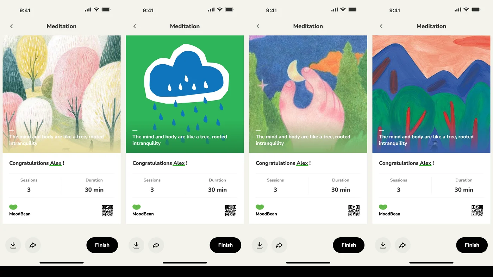

把模型能力做成能上线、能验收的工具。
运营问“这场为什么比上一场差”，Agent 要答得出来，还要答得出处。我负责把客户手里的表和字段，翻译成 Agent 能懂、运营也认的同一套语言。
从延迟 badcase 查起：先聚类、再拆链路，最后落到断句参数上；然后逐个验证候选值，直到时延问题不再复现。

把情绪回复拆成两套规则：日记场景限 60 字、只接住不追问；对话场景给五段结构、允许一次邀请。再用品类标签把疗愈动作接进回复。
四个项目看上去分散，其实只回答了同一个问题：这件事该由模型决定多少。越往右上，授权越多，要提前框住的东西也越多。